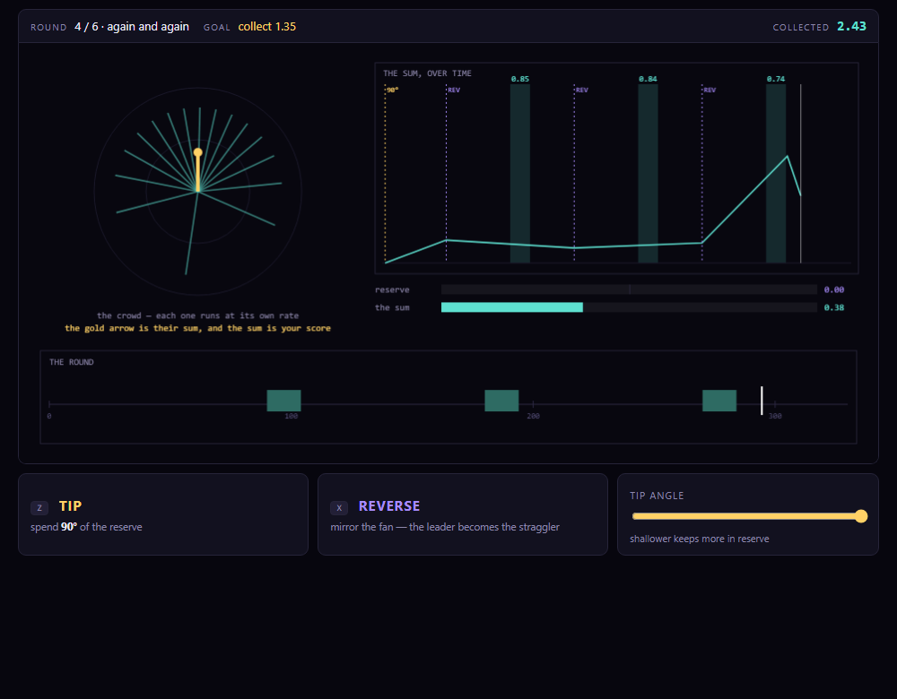

AGREEMENT
The idea
A crowd of things, each running at its own fixed rate. They start out pointing the same way and then they drift apart, because they always do. Your score is the length of their sum — not how many there are, not how much each one has, only whether they still agree.
There is no spectrometer anywhere in it. There are two moves and a dial. But every rule is a mechanism a nuclear spin actually runs on, and the best play in the last round is a published result.
The physics, digested into rules
This is the part worth reading. The left column is what the physics says; the right is the rule it became. Nothing was decorated and nothing was invented to fill a level.
| What the physics says | The rule it becomes |
|---|---|
| Signal is the vector sum over the ensemble — a detector adds contributions as vectors | You only score when they agree. A fanned-out crowd scores nothing although nothing has been lost |
| Each packet precesses at its own fixed offset | Things drift apart on their own. Entropy is the opponent |
| A 180° pulse mirrors the phase fan: whoever ran furthest ahead is now furthest behind, and everyone keeps their own rate | REVERSE. After the same time again, they all meet — the Hahn echo, as a single puzzle move |
Mz and Mxy are one budget: a tip pays sin θ and banks cos θ |
A reserve you spend at an angle. Go all in and the next gate pays nothing |
| T1 refills slowly; T2 drains fast; T2* is reversible and true T2 is not | The reserve regrows on a different clock, and REVERSE recovers the spreading but never the scatter |

Does the physics actually decide it?
The test of a rule is whether the naive play fails. Each round was played by script, both the obvious way and the intended way:
| Round | Naive play | Intended play |
|---|---|---|
| 3 · the echo | tip and wait → 0.01 | reverse at half time → 0.77 |
| 4 · the train | one reverse → 0.87 | three reverses → 2.43 |
| 5 · irreversible | gates pay 0.68 → 0.48 → 0.28 however well you reverse — the scatter never comes back | |
| 6 · the reserve | all in at 90° → 2.39 | 45° → 3.60 |
Round 6 is the one I would point at. The Ernst angle says
cos θ = exp(−TR/T1), which for these numbers (TR 40 ms, T1 200 ms) is
35°. Measured in the game the best play is nearer 45°, and
that gap is real rather than sloppy: the Ernst angle is a steady-state result, and
nine gates starting from a full reserve never reach steady state, which pays for a bolder
angle early. A player who finds the angle has derived the trade that every fast experiment
makes.

How this ended up here
Two earlier attempts are worth recording because the failures were instructive.
- A platformer with NMR skinned on it. It turned parameters into props — a 90° pulse became a floor pad you walked over, the receiver a hoop you ran through. The verdict was fair: you could not tell what any of it stood for, because jumping has nothing to do with magnetization.
- A faithful instrument trainer. The opposite error: real console, real shim coils, real lineshapes — and no game in it at all. Accurate, and inert.
- This. Digest the physics until what is left is a rule, then build the game out of the rules. The crowd, the sum, REVERSE, and the reserve are the whole design, and each one is a mechanism rather than a picture of one.
The instrument trainer is still here and still worth using — it is a real shimming drill where the lineshape tells you which shim is wrong. It is just not the interesting answer to "make a game out of this".
Under it
All three builds run on one spin engine, spin/bloch.js: 64 packets, each a
3-vector stepped through precession, T2 decay and T1 recovery, with the observable being the
vector sum. It is verified against closed form — a Hahn echo peaks at 35.0 ms against a
predicted 34.6, and at 0.791 M₀ against 0.792.
That 5 ms is worth a footnote: the textbook answer is 2τ = 40 ms, and it is wrong. The
refocusing envelope peaks at 2τ but is multiplied by a falling e^(−t/T2), which
pulls the maximum earlier by 1/(4π²σ²T2). The simulation was right and the
first prediction was not.
Also here: the spin sandbox (free play on that engine — T1, T2, shim and offset sliders, one-click Hahn echo, CPMG and inversion recovery) and Pixel Plumber, the first build, where the idea of making constants visible started.
Built with
Plain HTML5 canvas, CSS and JavaScript — no engine, no dependencies, no build step. Built and verified with Claude Code, including the round tuning, which was done by playing every round from a script rather than by feel.